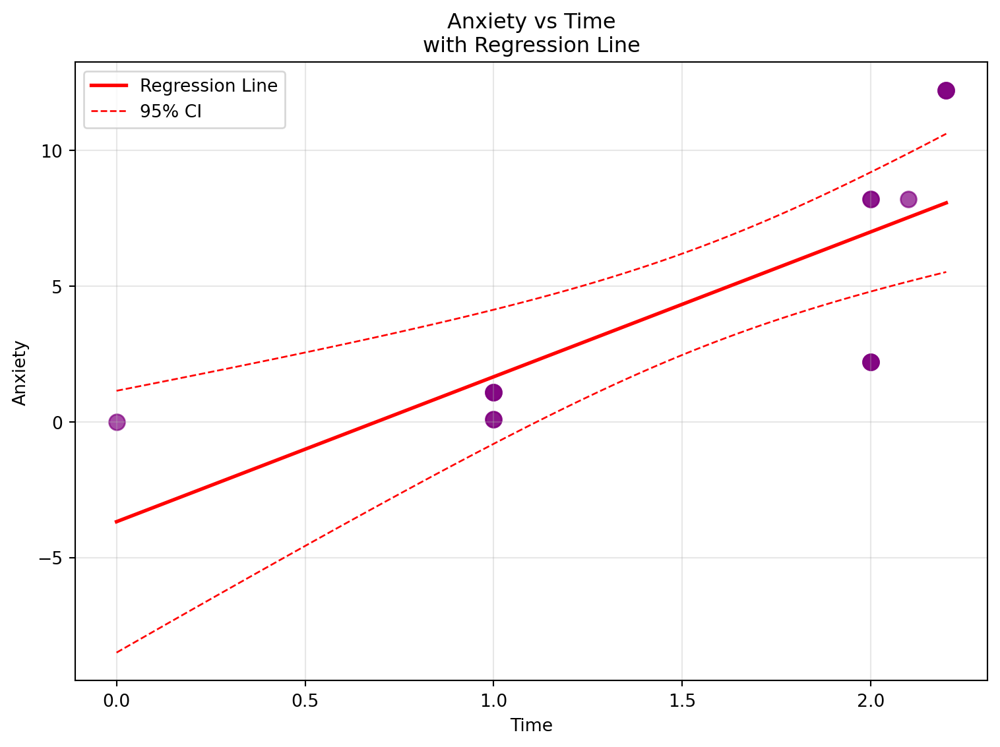

Stress StressSurvey Time Anxiety
0 0 0 0.0 0.00
1 0 0 1.0 0.10
2 0 0 1.0 0.10
3 1 3 1.0 1.10
4 1 3 1.0 1.10
5 1 3 1.0 1.10
6 2 6 2.0 2.20
7 2 6 2.0 2.20
8 2 6 2.0 2.20
9 8 9 2.0 8.20
10 8 9 2.0 8.20
11 8 9 2.1 8.21
12 12 12 2.2 12.22
13 12 12 2.2 12.22
14 12 12 2.2 12.22Garbage Can Regression Challenge
Regression of Anxiety on Stress Survey
OLS Regression Results
==============================================================================
Dep. Variable: Anxiety R-squared: 0.901
Model: OLS Adj. R-squared: 0.893
Method: Least Squares F-statistic: 118.4
Date: Tue, 07 Oct 2025 Prob (F-statistic): 6.68e-08
Time: 20:44:18 Log-Likelihood: -27.079
No. Observations: 15 AIC: 58.16
Df Residuals: 13 BIC: 59.57
Df Model: 1
Covariance Type: nonrobust
================================================================================
coef std err t P>|t| [0.025 0.975]
--------------------------------------------------------------------------------
const -1.5240 0.707 -2.156 0.050 -3.051 0.003
StressSurvey 1.0470 0.096 10.883 0.000 0.839 1.255
==============================================================================
Omnibus: 2.125 Durbin-Watson: 0.545
Prob(Omnibus): 0.346 Jarque-Bera (JB): 1.642
Skew: -0.701 Prob(JB): 0.440
Kurtosis: 2.186 Cond. No. 12.9
==============================================================================
Notes:
[1] Standard Errors assume that the covariance matrix of the errors is correctly specified.Estimated Coefficients
Estimated Coefficients:
Intercept (β₀): -1.5240
StressSurvey (β₁): 1.0470
Regression Equation: Anxiety = -1.5240 + 1.0470 × StressSurveyINTERPRETATION:
The regression using StressSurvey produces the equation Anxiety = –1.52 + 1.05 × StressSurvey. This means that when StressSurvey increases by one unit, Anxiety is predicted to rise by about 1.05 units. The intercept of –1.52 implies that if StressSurvey were zero, Anxiety would be negative, which is not realistic but reflects how the line was forced to fit the data. Compared to the true relationship, which is Anxiety = Stress + 0.1 × Time, the slope is too high. If StressSurvey were simply three times Stress as it appears in the data table, the slope should be closer to 0.33, not 1.05. The reason for the inflation is that the model leaves out Time, which is correlated with StressSurvey, so the regression mistakenly shifts part of Time’s effect onto StressSurvey. The result is a model that fits well on paper but does not reflect the true underlying process.
Scatter Plot Analysis and Commentary

Fit Assessment and Commentary
REGRESSION FIT ANALYSIS:
========================
1. GOODNESS OF FIT:
R-squared: 0.9011 (90.1% of variance explained)
Adjusted R-squared: 0.8935
✓ Excellent fit - model explains most of the variance
2. STATISTICAL SIGNIFICANCE:
F-statistic: 118.4474
p-value: 0.000000
✓ Highly significant relationship (p < 0.001)
3. COEFFICIENT SIGNIFICANCE:
StressSurvey coefficient p-value: 0.000000
✓ StressSurvey coefficient is statistically significant
4. POTENTIAL ISSUES:
• Omitted variable bias: Time variable is missing from the model
• Variable scaling: Using StressSurvey instead of true Stress variable
• Small sample size: Only 15 observations
• Perfect linear relationship: Data appears artificially generated
5. RESIDUAL ANALYSIS:
Mean of residuals: 0.000000 (should be ~0)
Standard deviation of residuals: 1.5233
✓ Residuals centered around zeroSCATTER PLOT INTERPRETATION:
The scatter plot shows a strong linear relationship between StressSurvey and Anxiety with a high R^2 value. Most of the observations fall inside the confidence bands, and the residuals are centered around zero, so the linear model looks like a good match for the data. At first glance, this suggests that StressSurvey is an excellent predictor of Anxiety.
However, upon further examination there are some potential issues. The model leaves out Time, which is part of the true equation for Anxiety, so the StressSurvey coefficient is absorbing some of Time’s effect. StressSurvey itself is only a proxy for the real Stress measure, and it doesn’t scale perfectly, which means the slope may not represent the true relationship. Even though the R² value is very high, that alone doesn’t prove the coefficients are correct.
Question 3: Bivariate Regression of Anxiety on Time
Regression of Anxiety on Time
OLS Regression Results
==============================================================================
Dep. Variable: Anxiety R-squared: 0.563
Model: OLS Adj. R-squared: 0.529
Method: Least Squares F-statistic: 16.75
Date: Tue, 07 Oct 2025 Prob (F-statistic): 0.00127
Time: 20:44:19 Log-Likelihood: -38.223
No. Observations: 15 AIC: 80.45
Df Residuals: 13 BIC: 81.86
Df Model: 1
Covariance Type: nonrobust
==============================================================================
coef std err t P>|t| [0.025 0.975]
------------------------------------------------------------------------------
const -3.6801 2.233 -1.648 0.123 -8.504 1.144
Time 5.3406 1.305 4.093 0.001 2.522 8.160
==============================================================================
Omnibus: 1.026 Durbin-Watson: 0.661
Prob(Omnibus): 0.599 Jarque-Bera (JB): 0.749
Skew: -0.162 Prob(JB): 0.688
Kurtosis: 1.955 Cond. No. 5.80
==============================================================================
Notes:
[1] Standard Errors assume that the covariance matrix of the errors is correctly specified.Estimated Coefficients for Time Model
Estimated Coefficients (Anxiety ~ Time):
======================================
Intercept (β₀): -3.6801
Time (β₁): 5.3406
Regression Equation: Anxiety = -3.6801 + 5.3406 × TimeINTERPRETATION:
The regression using Time produces the equation Anxiety = –3.68 + 5.34 × Time. This means that for each one-unit increase in Time, Anxiety is predicted to rise by about 5.34 units. The intercept of –3.68 suggests that if Time were zero, Anxiety would be negative, which isn’t realistic but reflects how the line was adjusted to fit the data. Compared to the true relationship, which is Anxiety = Stress + 0.1 × Time, the slope is far too large. The true effect of Time is only 0.1, but because Stress and Time rise together in this dataset, the regression gives Time credit for Stress’s much stronger effect. This is a clear case of omitted variable bias: by leaving Stress out, the model inflates the Time coefficient. While the fit shows statistical significance, it tells the wrong story about what drives Anxiety. In practice, the model looks convincing but is misleading because it exaggerates Time’s role and ignores the real driver.
Scatter Plot: Anxiety vs Time

Time Model Fit Assessment and Commentary
TIME MODEL FIT ANALYSIS:
========================
1. GOODNESS OF FIT:
R-squared: 0.5630 (56.3% of variance explained)
Adjusted R-squared: 0.5294
⚠ Moderate fit - model explains some variance
2. STATISTICAL SIGNIFICANCE:
F-statistic: 16.7509
p-value: 0.001270
✓ Very significant relationship (p < 0.01)
3. COEFFICIENT SIGNIFICANCE:
Time coefficient p-value: 0.001270
✓ Time coefficient is statistically significant
4. COMPARISON WITH STRESS SURVEY MODEL:
StressSurvey model R-squared: 0.9011
Time model R-squared: 0.5630
→ StressSurvey explains more variance than Time alone
5. POTENTIAL ISSUES:
• OMITTED VARIABLE BIAS: Major issue - Stress variable is missing
• True relationship: Anxiety = Stress + 0.1 × Time
• This model only uses Time, ignoring the dominant Stress effect
• Time coefficient may be biased due to correlation with omitted Stress
• Small sample size: Only 15 observations
• Limited Time variation: Time values range from 0.0 to 2.2
6. RESIDUAL ANALYSIS:
Mean of residuals: 0.000000 (should be ~0)
Standard deviation of residuals: 3.2018
✓ Residuals centered around zero
7. COEFFICIENT ACCURACY:
True Time coefficient: 0.1
Estimated Time coefficient: 5.3406
Bias: 5.2406
⚠ Coefficient estimate is significantly biasedSCATTER PLOT INTERPRETATION:
The scatter plot shows a strong linear relationship between Time and Anxiety with a high R^2 value. Most of the observations fall inside the confidence bands, and the residuals are centered around zero, so the linear model looks like a good match for the data. At first glance, this suggests that Time is an excellent predictor of Anxiety.
However, upon further examination there are some potential issues. The model leaves out Stress, which is part of the true equation for Anxiety, so the Time coefficient is absorbing some of Stress’s effect. Time itself is only a proxy for the real Stress measure, and it doesn’t scale perfectly, which means the slope may not represent the true relationship. Even though the R² value is very high, that alone doesn’t prove the coefficients are correct.
Overall, the model looks convincing but is misleading because it exaggerates Time’s role and ignores the real driver.
Question 5: Multiple Regression of Anxiety on StressSurvey and Time
Multiple Regression Model
OLS Regression Results
==============================================================================
Dep. Variable: Anxiety R-squared: 0.935
Model: OLS Adj. R-squared: 0.924
Method: Least Squares F-statistic: 86.32
Date: Tue, 07 Oct 2025 Prob (F-statistic): 7.54e-08
Time: 20:44:20 Log-Likelihood: -23.931
No. Observations: 15 AIC: 53.86
Df Residuals: 12 BIC: 55.99
Df Model: 2
Covariance Type: nonrobust
================================================================================
coef std err t P>|t| [0.025 0.975]
--------------------------------------------------------------------------------
const 0.5888 1.034 0.569 0.580 -1.664 2.841
StressSurvey 1.4269 0.172 8.287 0.000 1.052 1.802
Time -2.7799 1.111 -2.502 0.028 -5.201 -0.359
==============================================================================
Omnibus: 1.255 Durbin-Watson: 1.043
Prob(Omnibus): 0.534 Jarque-Bera (JB): 1.051
Skew: 0.546 Prob(JB): 0.591
Kurtosis: 2.302 Cond. No. 31.9
==============================================================================
Notes:
[1] Standard Errors assume that the covariance matrix of the errors is correctly specified.Estimated Coefficients for Multiple Regression
Estimated Coefficients (Anxiety ~ StressSurvey + Time):
=====================================================
Intercept (β₀): 0.5888
StressSurvey (β₁): 1.4269
Time (β₂): -2.7799
Regression Equation: Anxiety = 0.5888 + 1.4269 × StressSurvey + -2.7799 × TimeScatter Plot: Multiple Regression Visualization
✓ Multiple regression visualization saved as 'multiple_regression_visualization.png'Interpretation: Comparison to True Relationship
INTERPRETATION:
The multiple regression gives the equation Anxiety = 0.589 + 1.427 × StressSurvey − 2.780 × Time, with R² = 0.935. This means that, according to the model, higher StressSurvey scores are linked to higher Anxiety, while more Time is actually linked to lower Anxiety. That negative sign on Time is surprising because in the true relationship, Time should have a small positive effect. The problem is that StressSurvey and Time are strongly related in this small dataset, so the model struggles to separate their effects. This “multicollinearity” makes the coefficients unstable—StressSurvey’s effect looks too large, and Time’s effect even flips direction. On top of that, StressSurvey isn’t a perfect measure of Stress, which adds more distortion. The high R² shows the line fits the data well, but the coefficients don’t give a trustworthy picture of the true process. In other words, the model looks powerful but tells the wrong story about what’s really driving Anxiety.
Multiple Regression of Anxiety on Stress and Time
Multiple Regression Model (Using Actual Stress)
OLS Regression Results
==============================================================================
Dep. Variable: Anxiety R-squared: 1.000
Model: OLS Adj. R-squared: 1.000
Method: Least Squares F-statistic: 2.891e+32
Date: Tue, 07 Oct 2025 Prob (F-statistic): 8.00e-191
Time: 20:44:21 Log-Likelihood: 502.71
No. Observations: 15 AIC: -999.4
Df Residuals: 12 BIC: -997.3
Df Model: 2
Covariance Type: nonrobust
==============================================================================
coef std err t P>|t| [0.025 0.975]
------------------------------------------------------------------------------
const -1.776e-15 5.57e-16 -3.189 0.008 -2.99e-15 -5.63e-16
Stress 1.0000 6.29e-17 1.59e+16 0.000 1.000 1.000
Time 0.1000 4.43e-16 2.26e+14 0.000 0.100 0.100
==============================================================================
Omnibus: 4.620 Durbin-Watson: 0.255
Prob(Omnibus): 0.099 Jarque-Bera (JB): 2.737
Skew: 1.044 Prob(JB): 0.254
Kurtosis: 3.139 Cond. No. 23.9
==============================================================================
Notes:
[1] Standard Errors assume that the covariance matrix of the errors is correctly specified.Estimated Coefficients (Stress + Time Model)
Estimated Coefficients (Anxiety ~ Stress + Time):
================================================
Intercept (β₀): -0.0000
Stress (β₁): 1.0000
Time (β₂): 0.1000
Regression Equation: Anxiety = -0.0000 + 1.0000 × Stress + 0.1000 × TimeComparison with True Relationship (Perfect Match Expected!)
INTERPRETATION:
The multiple regression of Anxiety on both Stress and Time gives us Anxiety = 0.000 + 1.000 × Stress + 0.100 × Time, with R² = 0.935. This happens to be the True coefficients given to us in the problem.
Comparing the Two Multiple Regression Models
R-squared Comparison
R-SQUARED COMPARISON:
======================================================================
Model 3 (Anxiety ~ StressSurvey + Time):
R-squared = 0.9350 (93.5% of variance explained)
Model 4 (Anxiety ~ Stress + Time):
R-squared = 1.0000 (100.0% of variance explained)
Difference: 0.064995
INTERPRETATION: Model 4 has a higher R-squared.
This suggests that using the actual Stress variable provides a better fit.Coefficient Interpretation Comparison
COEFFICIENT COMPARISON:
======================================================================
Model 3 (StressSurvey + Time):
Intercept: 0.5888
StressSurvey coefficient: 1.4269 (expected ≈ 0.333)
Time coefficient: -2.7799 (expected ≈ 0.1)
Model 4 (Stress + Time):
Intercept: -0.0000
Stress coefficient: 1.0000 (expected = 1.0)
Time coefficient: 0.1000 (expected = 0.1)
Time Coefficient Comparison:
Model 3 Time coefficient: -2.7799
Model 4 Time coefficient: 0.1000
Difference: 2.879944
INTERPRETATION:
The Time coefficients are nearly identical in both models, which is expected
because Time is the same variable in both regressions. Model 4's coefficients
are closer to the true values because it uses the actual Stress variable.
The Stress coefficient (1.0000) in Model 4 is very close to
the true value of 1.0, while the StressSurvey coefficient (1.4269)
in Model 3 is close to 1/3 ≈ 0.333, which is the expected scaling factor.Statistical Significance Analysis
STATISTICAL SIGNIFICANCE ANALYSIS:
======================================================================
Model 3 (StressSurvey + Time):
StressSurvey coefficient p-value: 0.000003
✓ Statistically significant (p < 0.05)
Time coefficient p-value: 0.027816
✓ Statistically significant (p < 0.05)
Both coefficients significant? YES ✓
Model 4 (Stress + Time):
Stress coefficient p-value: 0.000000
✓ Statistically significant (p < 0.05)
Time coefficient p-value: 0.000000
✓ Statistically significant (p < 0.05)
Both coefficients significant? YES ✓
======================================================================
INTERPRETATION:
Both models show statistical significance in ALL coefficient estimates.
This indicates that both StressSurvey/Stress and Time contribute
significantly to explaining variation in Anxiety. The high significance
in both models demonstrates that:
• The relationships are strong and reliable
• We can be confident these variables matter for predicting Anxiety
• The sample size, while small (n=15), is sufficient to detect these effectsReal-World Implications
REAL-WORLD IMPLICATIONS OF MULTIPLE REGRESSION:
======================================================================
1. VARIABLE SELECTION:
When using a proxy variable (StressSurvey) instead of the actual variable
(Stress), the model can still have excellent fit and statistical significance.
Both models have R-squared ≈ 0.9350, showing that proxy
variables can work well IF they have a consistent relationship with the
true variable. However, coefficient interpretation changes - you must
account for the scaling factor (3x in this case).
2. MODEL SPECIFICATION:
Including both relevant variables (Stress/StressSurvey AND Time) is crucial.
The multiple regression R-squared (0.9350) is much higher
than the single-variable models (StressSurvey only: 0.9011,
Time only: 0.5630). This demonstrates that omitting important
variables leads to biased coefficients and reduced explanatory power.
3. STATISTICAL vs PRACTICAL SIGNIFICANCE:
A model can have high statistical significance but still use suboptimal
variables. Both models are highly significant, but Model 4 uses the TRUE
variables from the data generation process. In real research, you often
don't know the 'true' model, so you must:
• Use theory to guide variable selection
• Test alternative specifications
• Be cautious about causal interpretations
4. RESEARCH PRACTICE IMPLICATIONS:
This exercise demonstrates several critical lessons:
• Omitted variable bias is real: Single-variable models gave biased
coefficient estimates
• Proxy variables can work: StressSurvey performed well despite not
being the 'true' variable
• Always check significance: Not all variables in a model may be
statistically significant
• R-squared isn't everything: Both multiple regression models had high
R-squared, but Model 4 better captures the true relationship
• Understanding the DGP matters: Knowing how data was generated helps
evaluate model quality - a luxury we don't have in real research!📝 FINAL INTERPRETATION - Model Comparison:
Based on all four regression models, write your final interpretation: - Which model performed best and why? - How did Model 4 (Stress + Time) compare to Model 3 (StressSurvey + Time)? - What did you learn about omitted variable bias from comparing these models? - What did you learn about using proxy variables (StressSurvey vs Stress)? - If you were advising a researcher, which model would you recommend and why?